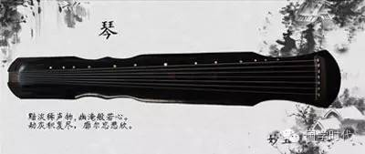
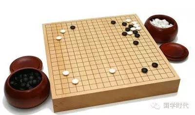
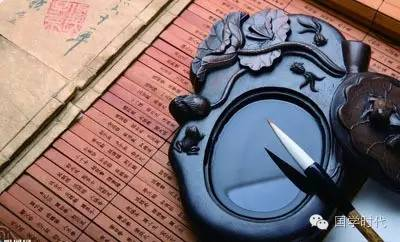
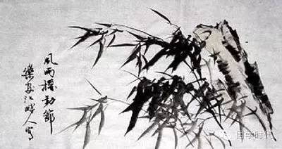

中国琴、棋、书、画的内蕴
 2,056
2,056
琴棋书画与中国传统文化的关系，可以追溯到两千多年前孔子所倡导的六艺，即“礼、乐、射、御、书、数”。经过数千年的积淀和演进，琴棋书画逐渐成为六艺的精简和提炼，成为中国传统文化的精髓之一，成为中国历代文人必备之修养。琴的深邃，棋的奥妙，书的神韵，画的意境，似宇宙的浩渺无垠、博大精深。有人在三尺瑶琴与方寸天地间直抒胸臆、运筹帷幄、纵横捭阖，有人在挥毫泼墨与粉墨丹青中感悟人生的真谛，穷其一生苦苦求索。清代大诗论家叶燮在论诗时说：“诗之至处，妙在含蓄无垠，思致微渺，泯端倪而离形象，绝议论而穷思维，引人于冥漠恍惚之境。”此语与论琴棋书画何其相似。中国传统艺术讲究中和、圆融、互通，即所谓“书画同源，诗画表里，乐舞一体，乐画相通”。

“琴棋书画”以琴居首，源远流长的古琴音乐已建立起一套关于美学、乐律、记谱法、演奏法等的完整体系，历来就有“琴道”“琴学”之称。琴学内容精深博大，源远流长，是中国传统音乐文化的代表。琴文化也是反映中国哲学、文艺美学、历史、文学的一面镜子。中国历史上的文人雅士多通音律，熟谙琴艺。孔子、庄子、宋玉、司马相如、蔡邕、蔡琰、阮籍、嵇康、王维、白居易、苏轼、董庭兰、郭楚望、徐上瀛等历代先贤，个个都是弹琴名手，甚至连“性不解音”的陶渊明，也备有一张“无弦琴”，雅兴一起则抱怀抚弄一番，并对友人解嘲说：“但识琴中趣，何劳弦上声。”能于无声的琴中领略琴之况味，获得创作的灵感与赏玩的乐趣，正是中国音乐“自娱说”的最好注脚。古琴音色古朴、沉郁、苍凉、凝重，有着精深高妙的美学内涵和艺术表现力，颇具超脱孤傲、典雅质朴的文人气度。《流水》的浩瀚博大，《广陵散》的慷慨悲壮，《潇湘水云》的深阔渺远，《渔樵问答》的飘逸洒脱，《平沙落雁》的宁静悠远，《酒狂》的放浪不羁，《幽兰》的清幽古朴……勾勒出古琴音乐的独特韵味和文化意蕴。古琴艺术在中国古代音乐乃至文化史中的地位与作用是其他任何乐器所不可替代的。实际上琴已不光是一种乐器，而成为了我国传统文化的一种符号和象征。

“棋”是指围棋，古称“碁”，起源于中国上古时代。传说尧帝的儿子丹朱顽劣，尧发明围棋以陶冶其性情。围棋子分黑白两色，规则简单而变化无穷，体现出鲜明的中国文化思想精髓。围棋之道博大精深，玄妙无穷，绝非常人的智慧所能参透。千古以来，多少帝王将相、文人雅士乐此不疲，演绎出多少传奇佳话、美文诗赋乃至兵书演算法、治国方略，成为中华文明史上一朵绚丽的奇葩。

书法是中国特有的一种传统艺术。在中国，写字之所以能成为艺术，是由于书写对象为具有形体美和表意功能的汉字，书写工具为能描绘出粗细、断连、长短、曲直、枯润、浓淡各种形态的毛笔，书写方法包括执笔、运笔、点画、结构、布局（分布、行次、章法）等内容。例如，执笔指实掌虚，五指齐力；运笔中锋铺毫；点画意到笔随，润峭相同；结构以字立形，相安呼应；分布错综复杂，疏密得宜，虚实相生，全章贯气等。汉字有篆书、隶书、楷书、行书、草书、宋体等各类书写形式，被誉为“无言的诗，无行的舞，无图的画，无声的乐”。书法艺术在发展过程中广泛汲取了绘画、雕塑、音乐、舞蹈、建筑等其他艺术的精华，因而具有极为丰富的艺术表现力，体现了中华民族的审美经验、文化品位和风格特征。同时，它又给予绘画、雕塑、音乐、舞蹈、建筑等艺术以深刻的影响，对中国传统艺术精神的形成和发展发挥了不可低估的重要作用。

“画”指中国画，一般用毛笔蘸水、墨、彩在绢帛、宣纸上绘作，以描绘人物、花鸟、山水为主，色调单纯明快，画风写意抽象，技法可分工笔和写意，它的精神内核是“笔墨”。工笔画用笔工整细致，敷色层层渲染，细节明彻入微，要用极细腻的笔触描绘物象。写意画用简练、豪放、洒落的笔墨，描绘物象的形神，抒发作者的感情。写意画在表现对象上是运用概括、夸张的手法，丰富的联想，用笔虽简，但意境深远。它要有高度的概括能力，要有以少胜多的含蓄意境，落笔准确，运笔熟练，方能得心应手，意到笔随。中国画从画面形式来分类，有壁画、屏幛、手卷、立轴、横披、册页、扇面等。中国古代绘画与书法并称书画，鲜明地体现了中国传统艺术的特征，因此与西方绘画在形象刻画、造型手段、色彩处理、透视方法和构图上风格迥异。中国绘画注重留白，融诗、书、画、印为一体，产生特殊的观赏效果。
气韵相周，含蓄无垠
艺术可以触类旁通，互相渗透、互相启发、互相影响，琴棋书画四艺尤其如此。中国古典艺术所表现的静远澹逸、含蓄空灵、玄妙幽深、刚柔相济、动静相衬、虚实并见、抑扬顿挫……均可在琴棋书画等传统艺术的风骨神韵中得到体现。弹琴追求的是精气内聚、外柔内刚、气韵流转、绵亘贯通。这与书法讲究内气贯注、笔走龙蛇、虚实相生、张弛有度不谋而合。棋道精修的是运筹帷幄、纵横捭阖、洞察入微、胸怀全局。这与绘画之谋篇布局、着墨构图，讲究计白当黑、写意传神，注重线条色块的铺陈走势，泼墨的干湿浓淡，构图的虚实疏密，更是神韵相通。琴棋书画，其艺术品位，其文化内涵，其审美意趣，其历史渊源，是息息相通、一脉相承的。这是中华五千年灿烂文明孕育出来的奇葩。吴调公在论及诗歌的“空灵”时说：“在密度上以少胜多，在色彩上以淡写浓，在时间上从片刻见永恒，在空间上从咫尺见千里，在力度上求飘洒而避豪健……”此亦可视为琴棋书画以及华夏传统艺术的玄妙奥秘之所在。古代琴论中提出的“和、静、清、远、古、淡、恬、逸、雅……”的审美境界，亦可视为琴棋书画四艺共通的美学理想。中国音乐与书法的线性表征最为相通。多变的线性，细微神奇，其透露出生命心灵直觉把握的情感幅度，激荡着宇宙、自然、人生、人格、人性之万象，可谓天地万物无所不包。中国音乐与书法的线条艺术是有机生命本体的显现。因此，可以说“音乐是流动的书法”“书法是凝固的音乐”。古琴的吟、揉、绰、注，其演奏过程与书法回锋、逆锋、涩进、转锋、藏锋和出锋的线条之波折力点相似，其构成的音响，可粗可细、可重可轻、可急可缓，其感觉可滑可涩、可流可塞、可刚可柔、可强可弱、可扬可抑，变化无穷。琴音与书法点画之波折构成的微妙神韵，恰似成公绥在《隶书势》中所写：“或轻拂徐振，缓按急挑，挽横引纵，左牵右绕，长波郁拂，微势缥缈。”这是对古琴与书法艺术的精彩写照。琴棋书画的灵魂是“韵”，韵由气而生，气流转而生韵。气是一种空间状态，气是宇宙万物的生命，是一切艺术的根本。韵的形式要素是节律，动力要素是“气”，内容要素是“意”和“味”。“韵”是艺术美和艺术魅力的最直接展现，有“韵”则“意”“味”俱在。正如明代陆时雍所说：“有韵则生，无韵则死；有韵则雅，无韵则俗；有韵则响，无韵则沉；有韵则远，无韵则局。”古典艺术的独特韵味不在具体形象，中国画的韵味不在山、水、草、木、花、鸟、虫、鱼等实物，而是用以表现这些形象的着墨，它的轻重、浓淡、干湿、疾徐所展示出来的节奏和韵律，才是作品之魅力的重要成分。八大山人有一幅画，画面上只有一根光秃秃的树枝横伸出来，寥寥两笔，极简省遒劲，枝头上立着一只缩着脖子翻着白眼的鸟，大片留白是灰色的苍穹。面对这幅画，我们无法说它“美”，它的魅力不在形象，也不在意境，而在笔墨勾勒出的一种张力，这种张力制造了生命的韵律和节奏，使它有了一种生气、一种活力、一种气质、一种精神。书法，也讲究气韵和律动，王羲之的流转和潇洒，颜真卿的饱满和凝重，柳公权的清瘦和挺拔，张旭的飞动和狂狷等，都是以其特有的神韵征服欣赏者的。古琴音乐的清、逸、淡、远，余音袅袅是一种“韵”，郑板桥的竹、齐白石的虾、徐悲鸿的马是一种“韵”，棋艺也有韵，小小一盘棋彰显的是人的灵性和精神的修炼。张彦远在《历代名画记·论画六法》中说：“若气韵不周，空陈形似，笔力未遒，空善赋彩，谓非妙也。”其实琴棋书画四艺趣味相通，倘没有韵致，没有性情，没有灵动，没有顿悟，琴是一张枯琴，棋是一盘死棋，书画亦乏善可陈，废纸一堆耳。以个性化精神修炼为主旨的琴棋书画四艺是中国传统艺术的瑰宝，其深厚的渊源，深刻的内涵，深邃的意境，隽永的韵味，高雅的格调，闲逸的情趣，与博大精深的中华传统文化是一脉相承的。
来源/国学时代
文/终南